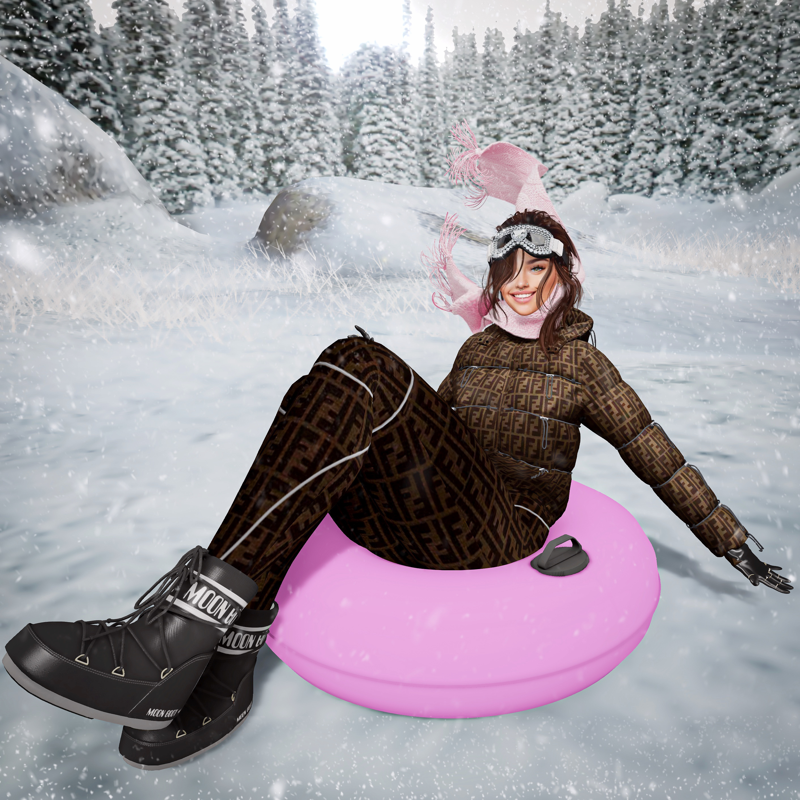

❄ Winter Taste ❄
← Coming from 10th to 12th December! →




About This Event ❤️
งาน 'Winter Taste' เป็นที่ชุมชนในการเสนอโอกาสให้ผู้รักความเย็นได้สัมผัสประสบการณ์ที่หลากหลายในการสนุกสนานและช้อปปิ้งในฤดูหนาวที่นี่เอง! งานนี้จะนำเสนอชุดเสื้อผ้าฤดูหนาวที่ทันสมัยและสไตล์ต่างๆ ที่จะทำให้คุณตื่นเต้นในการสร้างลุคสุดเท่ในเวลาหนาวๆ อย่างเป็นระเบียบ ไม่ว่าคุณจะกำลังมองหาแบบเสื้อผ้าที่ทันสมัยหรือแม้กระทั่งการแต่งกายสไตล์คลาสสิก คุณจะพบว่ามีความหลากหลายในทุกคอลเล็กชั่นที่จะตอบโจทย์ทุกความต้องการ ไม่พลาดที่จะมาร่วมสนุกกับเหตุการณ์นี้และค้นหาเสื้อผ้าฤดูหนาวที่ทำให้คุณรู้สึกอบอุ่นและมีสไตล์ไปกับฤดูหนาวที่ยามนี้ได้ที่งาน 'Winter Taste' !When Does the Event Start? ⏳
งาน 'Winter Taste' จะเริ่มขึ้นในช่วงวันที่ 10-12 ธันวาคม ช่วงเวลา 08.00 น. ถึง 21.00 น. ที่ตึก ABC Buildingคุณสามารถเดินทางผ่านรถไฟฟ้าบนดิน (BTS) ไปลงสถานี DEF หรือเดินทางผ่านรถไฟฟ้าใต้ดิน (MRT) ลงสถานี XYZ หรือเดินทางมาโดยรถส่วนตัวเเละจอดบริเวณตึก ELO ได้เลย !